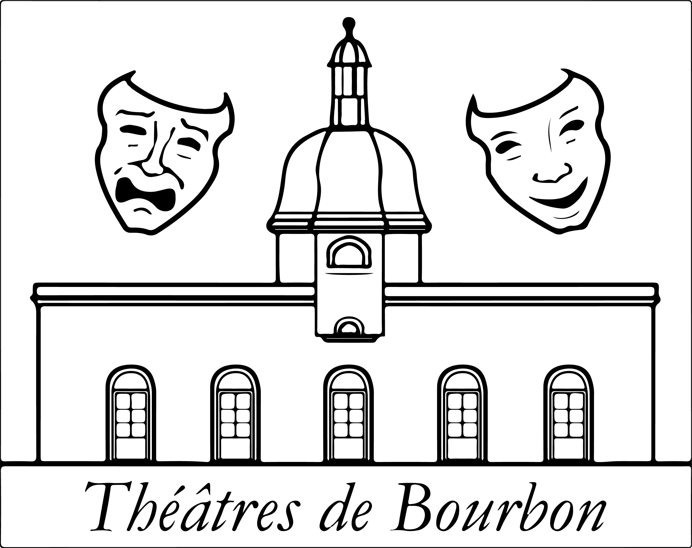

Festival de Theatre
Qui sommes nous ?
Par Jour
Par Troupe
Par Lieu
Tarif
Recette
Du 2 au 6 août 2019
une quarantaine de représentations
Des plus grands auteurs (Molière, Shakespeare...) aux créations
les plus originales
,
En plein air, les pieds dans l'herbe mais dans
des cadres exceptionnels
,
en toute simplicité
, chaleur et convivialité,
au cœur de la France
.
Changeons quelque chose à notre vie !
Théâtres de bourbon

information de derniere minute: à cause du spectacle de son et lumiere de Moulins, la représentation de Tartuffe ou l'imposteur au CNCS de Moulins le 6 août 2019 initialement prévu à 20h30 est avancé à 20h00.